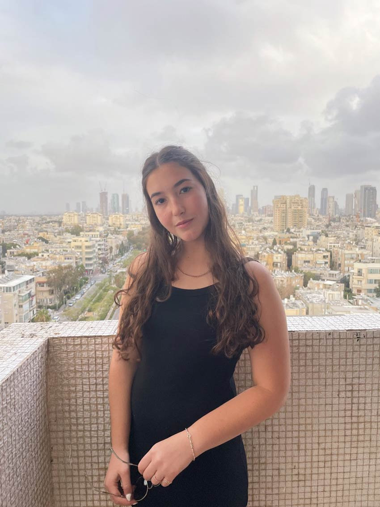

I am Israeli-American and speak both English and Hebrew fluently. My family and I moved to Maryland before the age of one and I grew up there until I moved to Philadelphia for college.
About Me


I am passionate about design, technology, volunteering, marine preservation, photography, and traveling the world.

Travel is important to me because I love nature, culture, and putting myself outside of my comfort zone. I am a very active person who loves to do activities like hiking, surfing, kayaking, sightseeing, biking, and exploring new areas. I love experiencing new cultures and learning from those cultures. When I travel I try my best to immerse myself into the culture of the place I am in. Traveling to various places takes a lot of planning, budgeting, learning, and adapting. This is why it can put you outside of your comfort zone. I believe that this is a great thing because it allows one to overcome challenges and to gain experiences one never thought they would have.
My favorite activities are snorkeling and SCUBA diving. I've always loved the ocean and learned how to snorkel with floaties when I was two years old! I obtained my first SCUBA certification when I was twelve years old and obtained my advanced certification when I was sixteen years old. I now have more than thirty-five dives. I volunteered at two organizations throughout high school. I volunteered as a kids counselor in the Tzofim Tzabar, a youth movement for Israeli, Hebrew speaking children. I also volunteered as a swim coach at the Gudelsky Exceptional Swim Program. As a coach, I provided aqua-therapy to children and young adults with physical disabilities and cognitive impairments. In addition, I always played sports growing up and mostly did gymnastics, swimming, and volleyball.